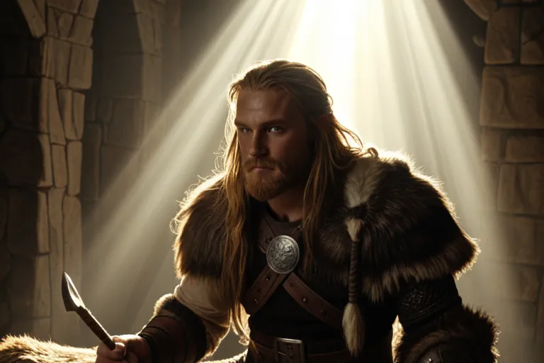

Óðinn (Один/ Водан)
Óðinn (Один) - Верховный Бог — Scandic | Скандинавская мифология
Верховный бог асов, бог войны, мудрости, поэзии и смерти
Óðinn (Один)
Происхождение:
- 👨 Отец: Borr (Борр)
- 👩 Мать: Bestla (Бестла) — великанша, дочь Bölþorn
- 👥 Братья: Vili (Вили) и Vé (Ве)
- 🏰 Жилище: Valhǫll (Валгалла) в Ásgarðr
Супруги и Возлюбленные:
- 👑 Frigg (Фригг) — главная супруга, богиня брака
- 🌍 Jörð (Йорд) — богиня земли, мать Þórr
- ⚔️ Rindr (Риндр) — богиня мести, мать Váli
- 🧊 Gríðr (Грид) — великанша, мать Víðarr
- 🌊 Rán (Ран) — морская великанша, мать Höðr
Великие Деяния:
- Вместе с братьями Vili и Vé убил великана Ymir и создал 9 миров
- Создал первых людей Ask (ясень) и Embla (ильм) из деревьев
- Принёс в жертву свой глаз великану Mímir за глоток из источника мудрости
- Повис на древе Yggdrasill на 9 дней и ночей, пронзённый копьём, чтобы познать руны
- Владеет копьём Gungnir, которое никогда не промахивается
- Владеет золотым кольцом Draupnir, с которого каждые 9 дней капает 8 колец
- Имеет двух воронов: Huginn (Мысль) и Muninn (Память), которые летают по миру и приносят новости
- Имеет двух волков: Geri и Freki
- Собирает павших воинов (эйхерьер) в Valhǫll для последней битвы Ragnarök
- Погиб в Ragnarök от пасти волка Fenrir, но был отомщён сыном Víðarr
Источники:
- Младшая Эдда, Видение Гюльви, главы 9-15
- Старшая Эдда, Речи Высокого (Hávamál)
- Старшая Эдда, Прорицание Вёльвы (Völuspá)
- Старшая Эдда, Песнь о Гримнире (Grímnismál)
- Сага об Инглингах (Ynglinga saga)
Дети Одина (от разных матерей):
Baldr (Бальдр) ✨От Frigg. Бог света и красоты.
Höðr (Хёд) 🌑От Frigg/Nanna. Бог тьмы.
Þórr (Тор) 🔨От Jörð. Бог грома.
Váli (Вали) 🏹От Rindr. Бог-мститель.
Víðarr (Видар) 🤐От Gríðr. Бог мести и молчания.
Hermóðr (Хермод) 🏃От Frigg. Вестник богов.
Bragi (Браги) 🎭От Frigg/Gunnlöd. Бог поэзии.
Týr (Тюр) ⚖️Возможно от Odin. Бог войны.
Ullr (Улль) 🏹Возможно от Odin. Бог охоты.
Magni (Магни) 💪От Jörð. Бог силы.
ᚱ